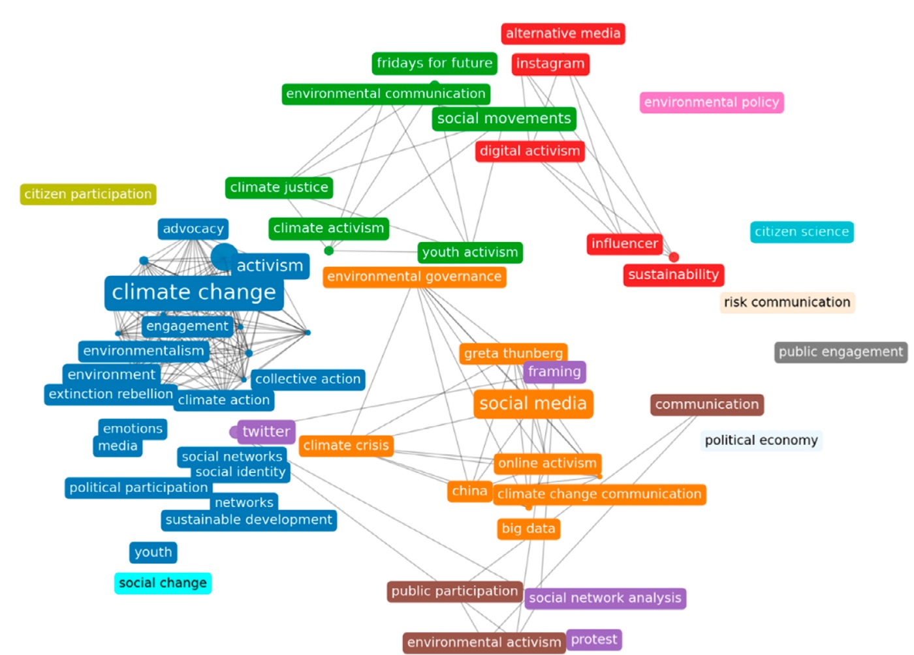

Communication in climate activism and citizen participation has gained prominence over the past decade, driven by the global climate emergency and the rise of digital platforms as key arenas for mobilization. This study analyzes the evolution of scientific research on these topics between 2014 and 2024, a period shaped by pivotal moments such as the Paris Agreement and the emergence of movements like Fridays for Future and Extinction Rebellion. Drawing on a bibliometric and narrative review of 255 peer-reviewed articles from the WOS, Scopus, and SciELO databases, the study maps trends in publication volume, collaboration patterns, and thematic focus. Results indicate sustained growth in the field, with a strong concentration of English-language publications and authors affiliated with Global North institutions, highlighting persistent structural asymmetries. The literature focuses on framing, youth activism, digital platforms, and emotionally charged narratives, especially those tied to identity and climate anxiety. Activists use creative, participatory strategies—art, lifestyle practices, memes, and co-created content—on platforms like Instagram, X, and TikTok. In contrast, research on local communication practices, everyday activism, citizen science, and Global South perspectives remains limited, revealing an epistemic gap. These findings point to the need for future research grounded in a more diverse approach to communication: local contexts, decolonial frameworks, and underrepresented territories to enhance citizen agency in addressing the climate crisis.
Journal articles · 2026
Communication, Citizen Participation, and Climate Activism: A Bibliometric and Narrative Review of Scientific Research (2014–2024)
Palabra Clave, 29(Supl. 2), e29s21
